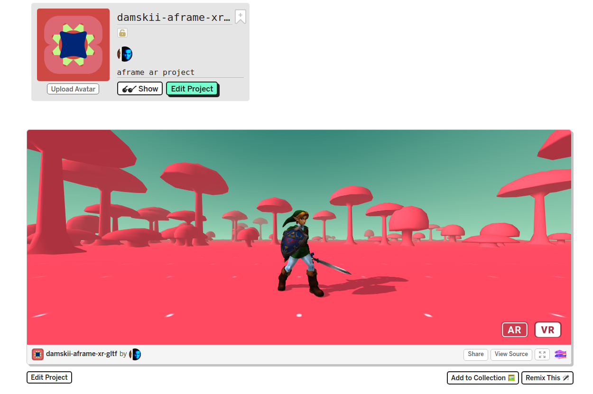
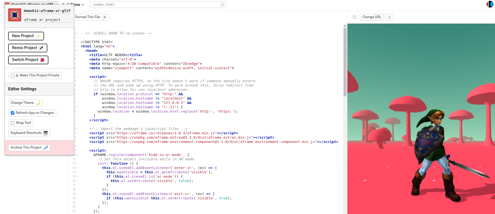
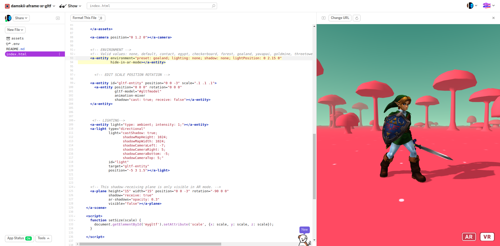
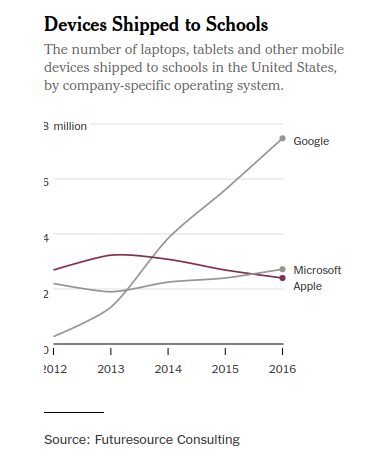

Online Tuition with Tools for WebXR
Dr. Damian Hills
Demo : https://damskii-aframe-xr-gltf.glitch.me/
Demo (project): https://glitch.com/~damskii-aframe-xr-gltf
Online Tuition with Tools for WebXR
Dr. Damian Hills
What is the WebXR standard?
• is a group of standards which are used together to support rendering 3D scenes to hardware designed for presenting VR/AR
• It builds upon a set of browser based technologies that include the WebGL standard that supports 3D rendering in browser environments.
• expands on the WebVR API to include a broader range of mixed reality devices
https://developer.mozilla.org/en-US/docs/Web/API/WebXR_Device_API
Why VR/AR on the web?
• No large IDE required for development, just a browser and text editor
• Use tools web developers know - javascript, HTML
• Desktop/Mobile Progressive Web Apps (PWA)
• Cross platform
What are the tools?
• aframe - web framework for building XR experiences
• glitch - browser based project management
• reveal.js - HTML presentations
• GLTF - a standard format for 3D scenes and models
• Mozilla Hubs - open standards for social VR with privacy
About the Course Delivery
• 3D design students working in immersive media
• Conducted before/after C19
• Minimal changes to course to go online
• Simple examples, difficult subjects
Why WebXR tools for online delivery?
Progressive Enhancement is a design philosophy that centers around providing a baseline of essential content and functionality to as many users as possible, while at the same time going further and delivering the best possible experience only to users of the most modern browsers that can run all the required code.
Why WebXR tools for online delivery?
• standards should operate equally on both the student and instructor’s devices.
• interoperability of online tools allow for interesting combinations of techniques that are favourable to online social engagement
• history of web tools in education, eg Blackboard Collaborate
Glitch.com - AFRAME
Glitch.com - "Project Management"
Glitch.com - "Remix a project"
Glitch.com - "Show next to code"
Glitch.com - "Demo Project"
Demo : https://damskii-aframe-xr-gltf.glitch.me/
Demo (project): https://glitch.com/~damskii-aframe-xr-gltf
On IOS? Get viewer app for WebXR
 gltf
gltf
•glTF™ (GL Transmission Format) is a royalty-free specification for the efficient transmission and loading of 3D scenes and models by applications.
•glTF minimizes both the size of 3D assets, and the runtime processing needed to unpack and use those assets.
• glTF defines an extensible, common publishing format for 3D content tools and services that streamlines authoring workflows and enables interoperable use of content across the industry.
Why WebXR and web standards will be important for education
• Future is hybrid online/in person course delivery
• Best for privacy (immersion tells us more about people and that data must remain personal)
• Standards teach fundamentals to students (they can apply elsewhere)
Keeping up with the standards
•Chromebooks overtaking iPad in classrooms
•They are losing out because of the wall garden?
•In education web standards are important
•Safari 14 - supporting WebGL2 so they are interested (but need to be consistent and up to date or lose in market) (I think they will get to WebXR soon)